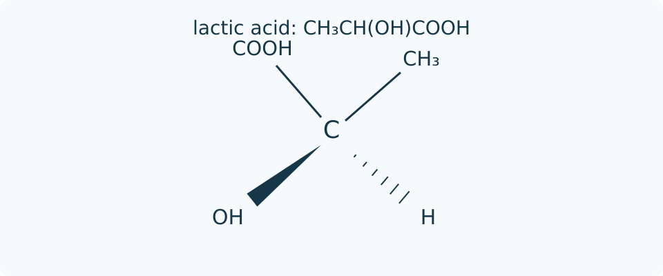
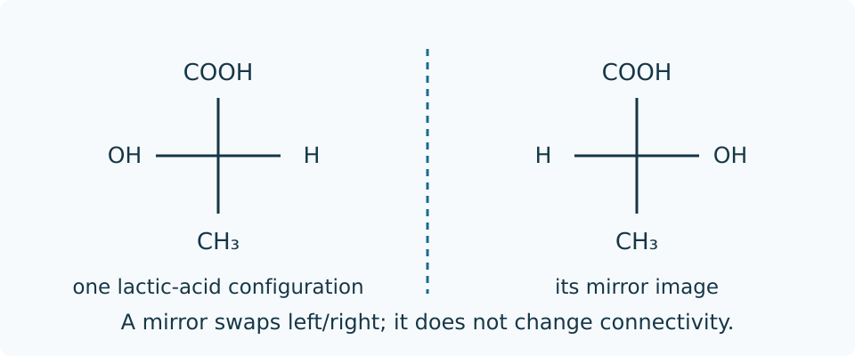
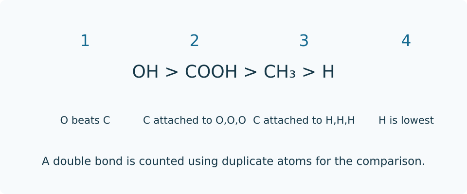
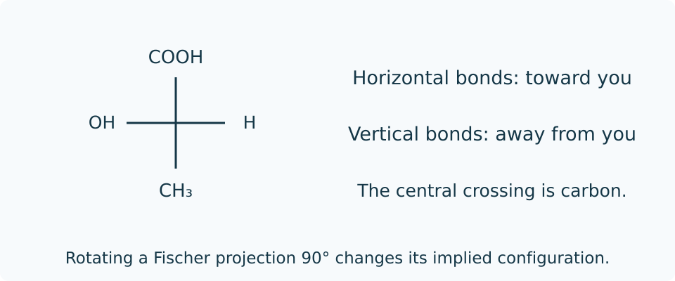
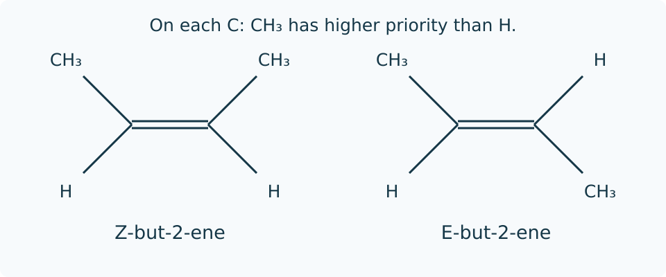

Week 2 · Connectivity first, spatial relationship second
What will you be able to explain?
Classify constitutional isomers, conformers and configurational stereoisomers.
Assign simple R/S and E/Z descriptors with justified priorities.
Explain chirality, meso compounds and enantiomeric excess.
First ask what has changed
Constitutional-isomer comparison contrasted with butane conformations.
Different connectivity gives constitutional isomers. Same connectivity requires further spatial comparison.
Find four different substituents

A tetrahedral lactic-acid carbon attached to COOH, CH3, OH and H.
This carbon is a stereocentre because its four substituents differ. Wedge bonds point toward you and hashed bonds away.
Compare mirror images

Mirror-related Fischer projections of lactic acid.
Enantiomers are nonsuperimposable mirror images. They have the same connectivity and opposite configuration at this single stereocentre.
Rank by atomic number, then the first difference

OH outranks COOH, which outranks CH3, while H is lowest for lactic acid.
For the carbon tie: the carboxyl carbon compares as O,O,O while the methyl carbon compares as H,H,H under the duplicate-atom convention.
A Fischer projection encodes depth

Horizontal Fischer bonds point toward the viewer and vertical bonds away.
You must use the projection convention when assigning configuration. A 90° page rotation is not a safe identity operation for a Fischer drawing.
Use the direction of group four
Lactic-acid Fischer projection with OH left and H right is assigned S.
The apparent 1→2→3 trace is clockwise here, but group 4 points toward you: reverse the assignment to S.
A pi bond restricts the relevant rotation

Z-but-2-ene has methyl groups on the same side; E has them on opposite sides.
Assign priority separately at each alkene carbon. Higher-priority groups together give Z, opposite give E.
Two stereocentres need not make a chiral molecule
Meso-tartaric-acid Fischer projection has an internal symmetry relationship.
A meso compound is achiral despite stereocentres. Examine the complete molecule, not only each carbon in isolation.
Distinguish composition from excess
Seven R and three S symbols illustrate 70 percent R but 40 percent R enantiomeric excess.
For a two-enantiomer mixture, ee=|\%R-\%S|. Also state which enantiomer is in excess.
R/S does not predict the sign of rotation
R/S configuration and measured plus/minus optical rotation are distinct descriptors.
Optical rotation is measured under specified conditions. No general rule maps R to (+) or S to (−).
What relationships can three structures have?
For a compound with multiple stereocentres, stereoisomers may be enantiomers or diastereomers. Diastereomers are stereoisomers that are not mirror images.
Check that R% + S% = 100 before treating the sample as a two-enantiomer mixture.
A configuration is not a biological outcome
A chiral receptor can distinguish enantiomers. That observation does not tell us, without measurements, which enantiomer binds more strongly or what its effect will be.